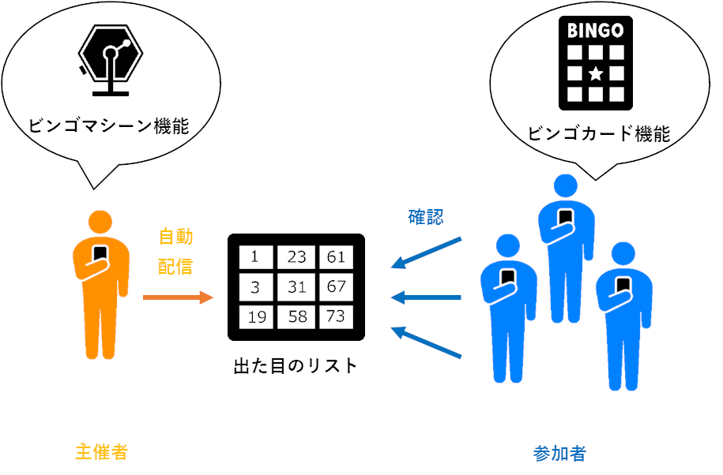
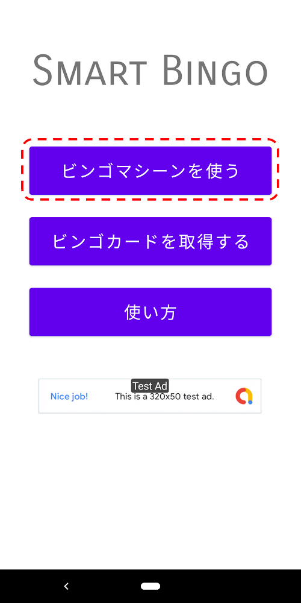
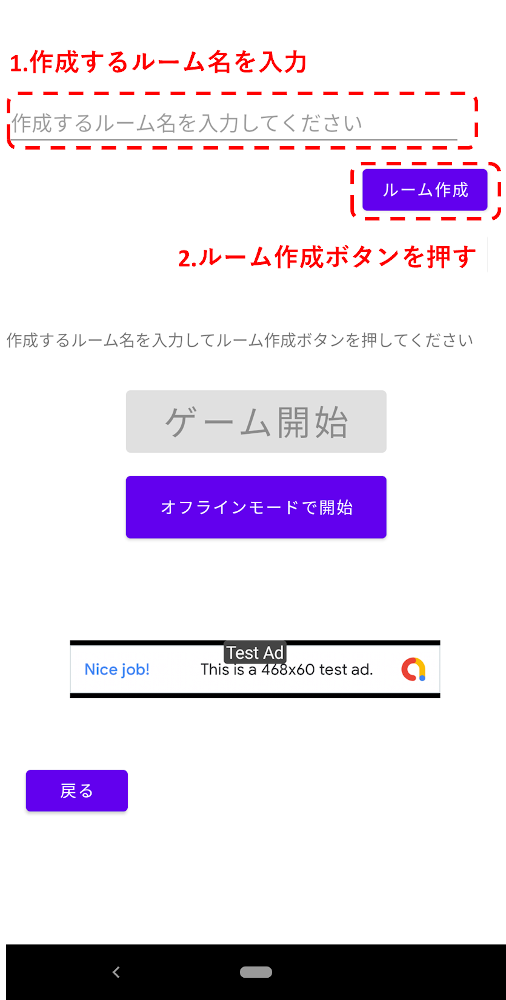

Smart Bingoをご利用いただきありがとうございます！Smart Bingoにはビンゴマシーンとビンゴカードの機能があり、このアプリ１つでビンゴ大会を開く事ができます。
また、このアプリでは出た目の情報をネットワーク経由で参加者に通知できるため、簡単かつ正確にゲームを進行することができます。
ビンゴマシーン機能についての説明です。ビンゴ大会の主催者はこの機能を使用してください。目の抽選と確認及びこれまで出た目のリストを全自動で全参加者に送信する機能があります。
①[ビンゴマシーンを使う]ボタンを押してください。
②任意のルーム名(※)を決め、テキストボックスに入力した後[ルーム作成]ボタンを押してください。
※ルーム…ビンゴ大会を開催する仮想的なゲーム会場のことです。主催者がルームを作成し、参加者がそこに参加することで出た目の情報を共有することができます。
([オフラインモードで開始]を押すとルーム作成を省略してゲームを開始します。オフラインモードの場合、目の抽選と確認は可能ですが、参加者に出た目の情報を送信することはできません。)
